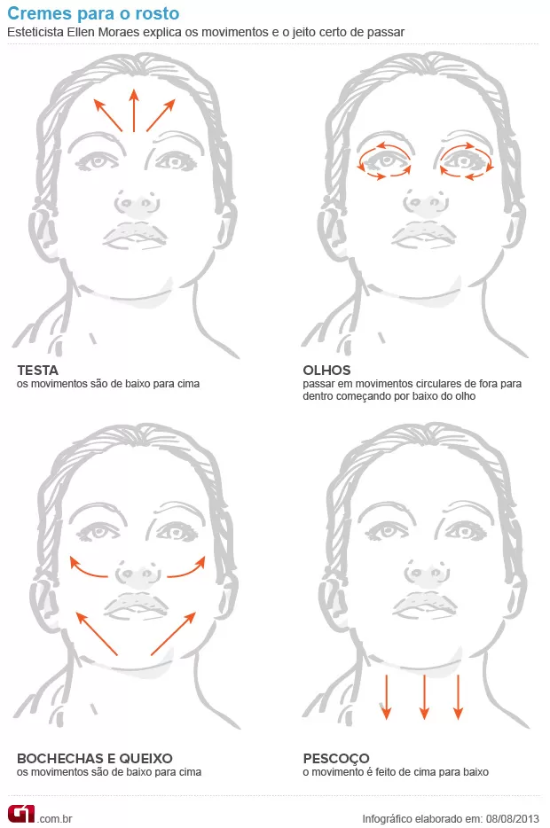

Preparação da Pele
Lave o rosto com um sabonete adequado. Aplique um hidratante facial para preparar a pele para a maquiagem.
Aplicação da Maquiagem
Aplique uma base do tom da sua pele e espalhe uniformemente com um pincel ou esponja. Em seguida, aplique o corretivo nas áreas desejadas.

Acabamento
Finalize com blush nas maçãs do rosto, sombra nos olhos e um batom de sua preferência. Se desejar, finalize com pó compacto para fixar.